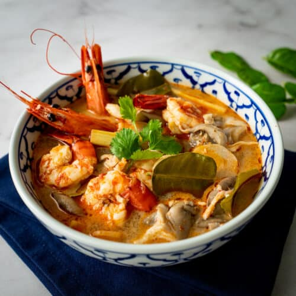

{kind=link}
Tom Yam Goong is one of Thailand’s most famous and beloved dishes, known for its bold balance of spicy, sour, salty, and aromatic flavors. It is a hot and sour soup made with shrimp as the main protein, infused with fragrant herbs such as lemongrass, kaffir lime leaves, galangal, and chilies, often complemented by mushrooms and fresh lime juice. Traditionally seasoned with fish sauce and chili paste, the soup has a distinctive taste that is both refreshing and warming, making it a perfect comfort food. Widely enjoyed both in Thailand and internationally, Tom Yam Goong is considered a symbol of Thai culinary identity, showcasing the harmony of flavors that defines Thai cuisine.
Ingredients
- water or 2 bowls of soup
- Shell removed shrimp with any amount you want
- 2 lemongrass
- 2 shallot
- 5 galangal
- 5 kaffir lime leaves
- Any amount of Bird's eye chili
- 2 tablespoons of lime juice
- 2 table spoons of fish sauce
- 2 coriander
How to cook
- Heat up water in a pot until it boils, put in the shrimp and let it cook for a bit then take them out and let them rest
- Put in the Lemon grass, Galangal, Spices, Mushroom and Kaffir lime leaves in to the boiling pot
- Adjust the taste with the fish sauce and lime juice to your preference
- Put the Rested Shrimp into a Bowl then pour in the finished soup and finally top it off with Parsley